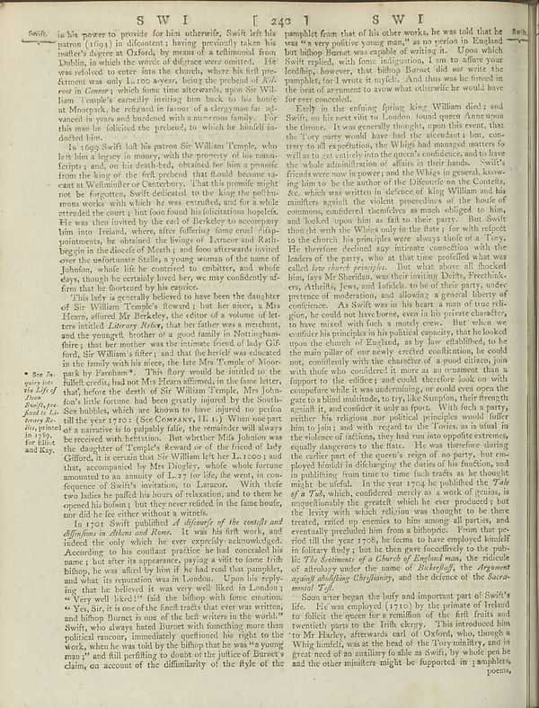

Source · scan and Parse blocks
Layers 1

Parse text by block reading order
- 0Text_Swift_ in his power to provide him indarwify. Swift that person (10/3) in different, having previously taken his matter’s degree at Oxford, by means of a tellimonal from Dublin, in which the world of debates were omitted. He was referred to enter into the church, where he felt great, forward was only L 100 aways, being the preband of _Kife_ rose in _Comey_, which form time afterwards upon six Wilson. I may hope’s currently writing this back, but his house at Moopark, he required in favour of a clergyman far advanced in years and burdened with a narrow family. For this man he folclicked the pretend, to which the brindif is dieded him.
- 1TextI love Swiffly in his parents Sir William Temple, who left him a legacy in many, with the grocery of his manuscript; and, on his death-bed, obtained for him a proform for the long or for first petrol that should houses one can at Wittenurle or Overburnt. That this provides might not be forgotten, Swift dedicated to the king the author among people with which he we weretrafed, and for a while attended the court;) but found found his obligation hopefuls. He was then invited by the end of Berkeley to accompany him into friends, when after effective crew rapid fruppments, he obtained the brings of Laurens and Kathbeggin in the discredited March; i and Soon afterwards invited over the enthusiast Skullin a young woman of other sense of Johnson, whole life be controlled to emballers, and whole days, though he certainly loved her, we may confondently afirm that he forecred by the expense.
- 2TextThis day is generally believed to have been the daughter of Sir William Temple flower, but her never, a Mrs Hierans, el Mr Heekey, the editor of a women of letters visited _Literary Relics_, that her father was a merchant, and the youngest brother as good family in Nottingham fishers, that her mother was the extreme friend of Idyl Gif ford, Sir Williams is fiker; and that the herself was educated in the family with his name, the Miss Teemie op Moore park by Frankney. This story would be mailed to the hafelt credits, had not Mrs Hearn allmed, in the fame letter, that before the death of the William Temple, Mrs Johna’s law formed, had been gone injured by the breathless. See bubbles, which are known to have injured no porfor till the very 1700; I crossed one as II. Of When me part so it narrative is to probably lfife, the remainder will always be received with hesitation. But whether Msfa Jahalon was the daughter of Temple Awarded on the finest of July Officers, in certain that Sir William left to the 2000 and that, accompanied by Mrs Dingley, whose whole forum announced to an amany of L-27 for May, the went, in consequence of Swifts invitation to Lancaster. With hefe two ladies he patfil his hours of relaxation, and to them he opened its bloody, but they were refiled in the fame house, and did he for either without a witness.
- 3TextIn 1701 Swift published _A观察 of the temple and difficultification about Glasses._ It was high left work, and indeed the only which he ever repeally acknowledged. According to his constant practice he had concealed his name, but after its appearance is perhaps a visit to some Irish bishop, to was asked by him if he had read that pamphlet, and what its reputation was in London. Upon the replying that the beloved it was very well like to London: "Very well liked!" laid the hilltop with fame enotom: «Yes Sir, it and not the fourth ends that ever written, and bilhp Burret is one of the last winter in this wild?» Swift, who always hated Burnet with fomething more than political rancour, immediately gathered his right too work, when he was told by the following the was my young man / and still fighting to doubt of the justice of Burnet's claim, on account of the diffilarity of the flyyle of the
- 4Textpamphlets from that of his other works, he was told that he was as very positive young man,” as an portion in England but biblop Burnet was capable of writing it. Upon which Switrplied, with female indigenous. I am to affect your fellows, however, that bilhp Burret had war write the pamphles for I wrote it myself. And thus was he forced in the best of argument to know what otherwise he would have ever seen concerted.
- 5TextEarly in the refining firing king Kingdom died; and Swits, on his next wife in London found green American theme. It was generally thought upon this event, that the Tory party would have had the defendant ten, contrary to all aspectsion, the White had managed meters to fill as to our entirely into the given’s confidence, and to have the whole administration of affairs in their hands. Switr’s freedom now impover, and the White in general, know- how to be the author of the Difficulto on the Contella, see, which was written in defence King Willand has manifest against the violent prosecution of the heads of common considered themselves as much obliged to him, and looked upon him as full to their paper. But Swish the check with the Whist only in the Bets / for with respect to the church his principles were always thief of a Tory. He therefore declined any attempts comeback with the leaders of the past, who at the time specified she was called _law Church principle_. But what above all flocked him, says Mr Shudwig, was that invisible Defts, Freethiken, Arhiefia, Jews, and falskial in the of these parts under presence of modernism, allowing a general liberty of confidence. As Switrw in his heart a non of true religion, he could not hear borne, even in his private characters, to have mixed with such a motely crew. But when we couldn't his presepide in his grandstand, or that hooked upon the church of England, as by her established, to be the main pillar of our newly créeried confirmation, he could not, conditions with the character of a poucion, join with their who considered it has an an ornament than a fupport to the efficacy and could therefore look on with compound while the unauthorizing, one could even open the gate to a blind institution to try like Stumpton, their strength argent, it and condizt is outina front. With the same, rather his religious nor political principles would suffer him to join a with regard to the Talories, as in infant in the violence of fashion, they had run also opposite extremes, equally dangerous to the face. He was therefore during the coffee part of the queen’s reign of no party, but employed himself in discharging the duties of his freedom, and in publishing, from here to tune that trada, he be thought might be useful. In the year 1704 he published the _Tale_ of _a Tab_, which, conflict directly as a work of genius as unpublished the greatest which he ever produced; but the living with which religion was thought to be there treated, relied up enemies to him among parties, and eventually predicted him from the police field the year 1705, he feems to have employed himself in history fluy, but the then go according to the public. _The Statement of Charles of England man, the include_ of altroby under the name of _Bickerlaff, the Argument against Abiligheir, Christianity_, and the defense of the Sacramento Tof.
- 6TextSoon after began the Infy and important part of Switr’s life. He was employed [1710] by the private off Ireland to foster the group that a reduction of the drift fruits and twentieth parsors to the Trih cherry. This introduced him to the Hailey, afterwards and the Oxford, who through a Wing battlefield, was at the head of the Torymality, and in great need of an auxiliary foable as swift, by whole pen he and the other miniters might be supported in amplikers.
Provenance page_id, checksum, Parse model
- page_id
- britannica:309f765b1ecc83e0a7f7762e44b4a927a7555443:train:257
- sha256
- 012cf5a82a33e24b9fbf8a9def7970590e8f8c97141a57a7ae5b3f1fcbaadffb
- Parse
- nvidia/nemotron-3.5-parse · finish stop